Centuries in the Making
Discover Sado Matcha's roots – bridging ancient Uji tradition with modern sustainable cultivation.
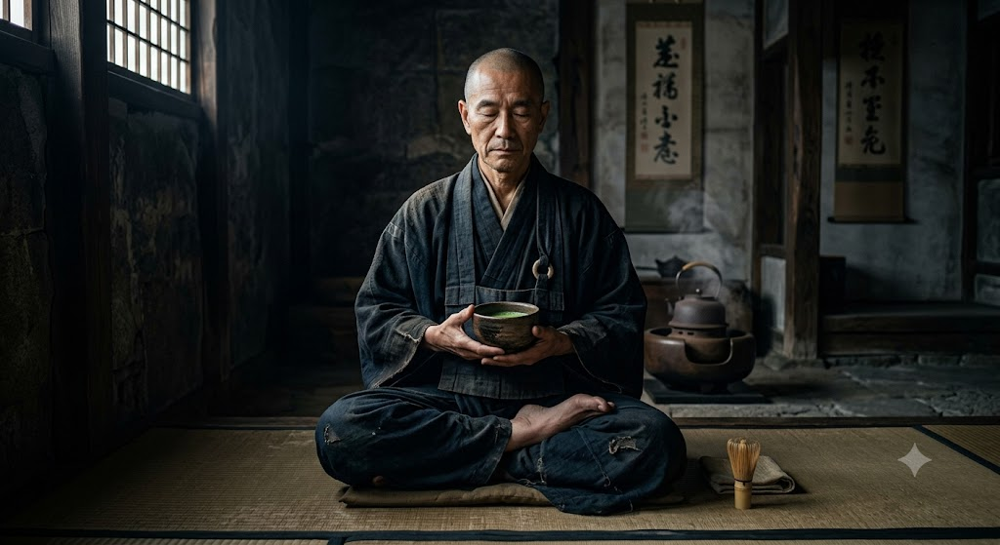
From Eisai's Seeds to Sado
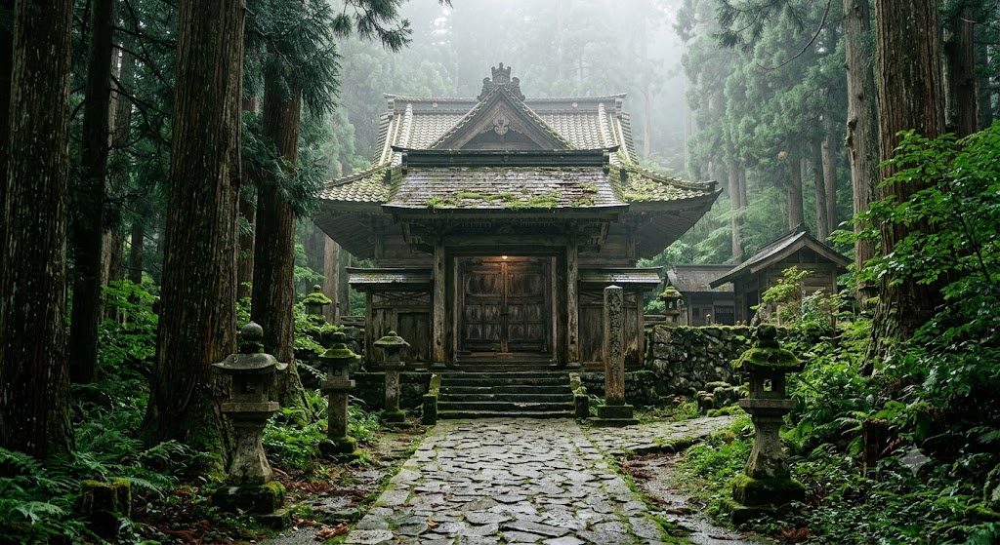
In the 12th century, the Zen Master Eisai returned from China to Japan with tea seeds and a simple philosophy: "Tea is the ultimate mental medicine." Sado Matcha was founded to revive this original, meditative vision of tea.
We believe that preparing matcha isn't a chore; it is an act of active meditation. It encourages you to slow down, listen to the water boil, breathe deeply, and connect with the present moment.
The Philosophy of Chado
Introduced by Sen no Rikyu, these four Zen tenets form the spiritual spine of every matcha preparation.
Harmony with Nature and Guest
Wa stands for the harmony between the host, the guest, and the natural elements. In the tea ceremony room (chashitsu), seasonal decorations, flowers (chabana), and scrolls are selected to resonate with the current climate, reinforcing the feeling of oneness with nature.
"Harmony is the gentle union of heart and environment, finding balance in the present moment."
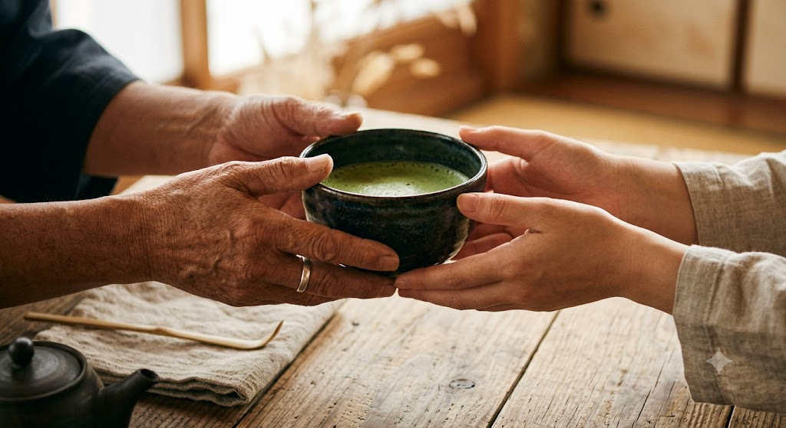
Respect for All Things
Kei is the principle of respect. It demands that we treat every person, utensil, and ingredient with equal reverence. In the tea room, social statuses are cast aside; everyone bows to each other, acknowledging the dignity of all human and non-human entities.
"Respect is realizing that every object, guest, and scoop of tea contains the spark of life."
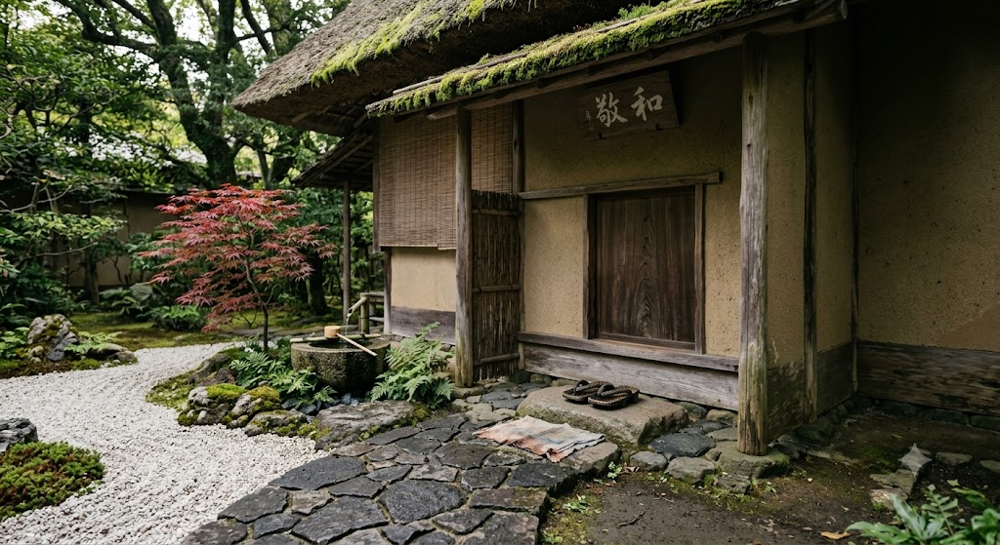
Purity of Heart and Mind
Sei represents purity. It is demonstrated physically by washing hands and rinsing mouths before entering the tea house, and symbolically by the host wiping clean the tea bowl and caddy. It signifies purging the mind of worldly worries and greed.
"Purity is wiping away the dust of the world, leaving only a clean glass to reflect the soul."
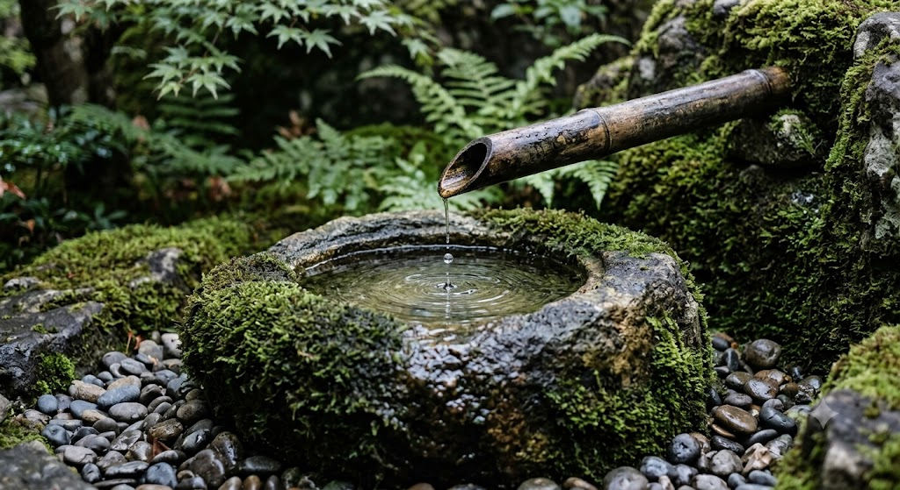
Tranquility in Action
Jaku is the ultimate stage: tranquility or peace of mind. It is not a passive silence, but a profound calm achieved when harmony, respect, and purity are integrated. In Jaku, the host and guest share a silent, shared appreciation of the tea bowl.
"Tranquility is not the absence of noise, but the quiet center within the storm."
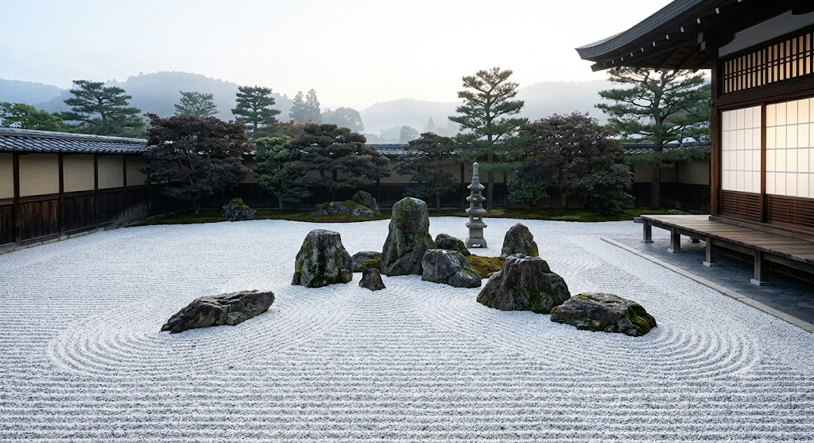
Our Organic Family Farmers
We partner directly with multi-generational organic farming cooperatives in Uji, Kagoshima, and Yame.
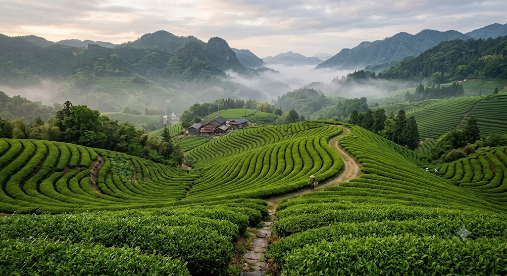
The Morimoto Farm
Uji, KyotoSpecializing in shaded Okumidori cultivars. The Morimoto family uses natural leaf mulch and zero synthetic pesticides.
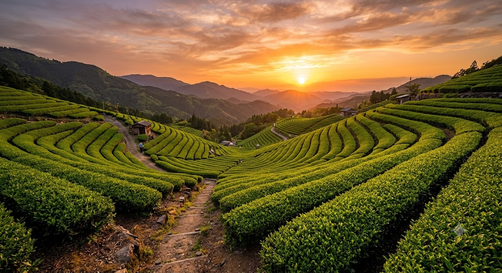
The Yame Cooperative
FukuokaAn association of nine family farms specializing in high-altitude organic Tencha leaves that produce floral aromas.
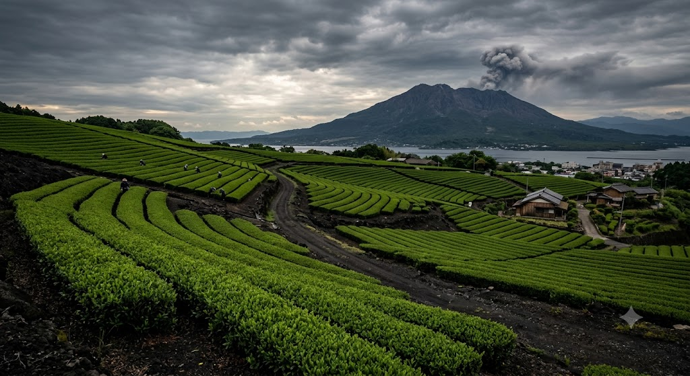
Kagoshima Organic Group
KagoshimaFarming in volcanic ash soil, creating leaves exceptionally rich in iron, minerals, and robust metabolic catechins.
30 RPM: The Speed of Calm
After being shaded, hand-picked, and dried, the leaf veins are removed to isolate pure 'Tencha'. This Tencha is then ground using massive, rotating granite wheels.
To prevent friction heat from scorching the leaves and ruining the vivid green chlorophyll, these stone mills rotate slowly, at exactly 30 RPM. It takes a full hour to produce a single 30g tin of Sado Matcha.
- Preserves delicate nutrients & antioxidants
- Minimizes heat oxidation
- Cultivates an incredibly fine, silky texture (5-10 microns)
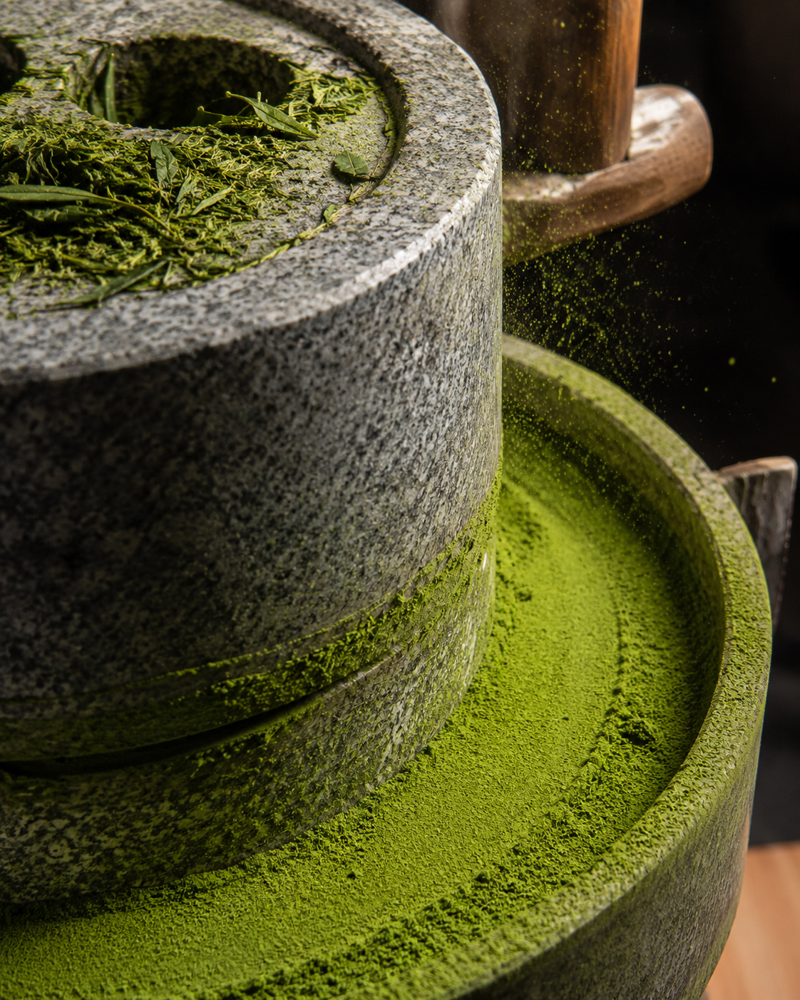
Our Certified Tea Masters
We collaborate with top-level certified tea masters to verify flavor consistency, grading, and roasting (hiire).
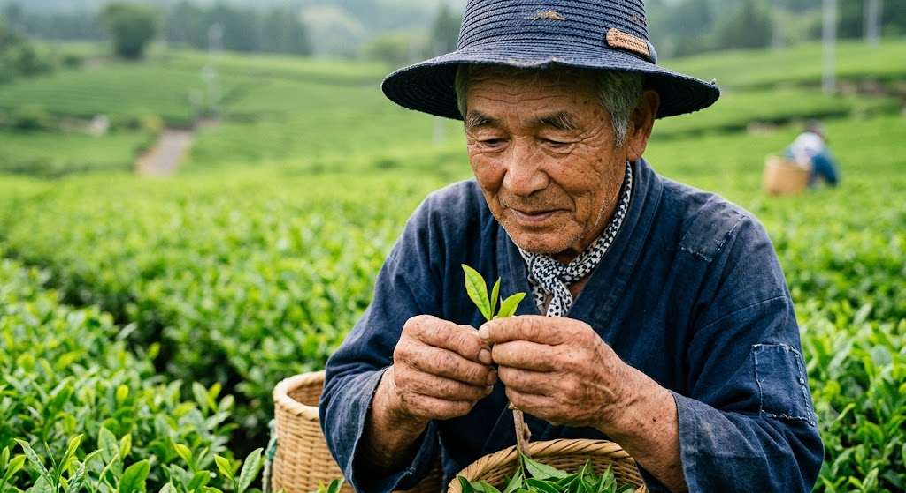
Master Kenji Sato
15th Generation Uji BlenderKenji-san judges our spring harvest, creating custom blends that balance robust sweetness and smooth creaminess.
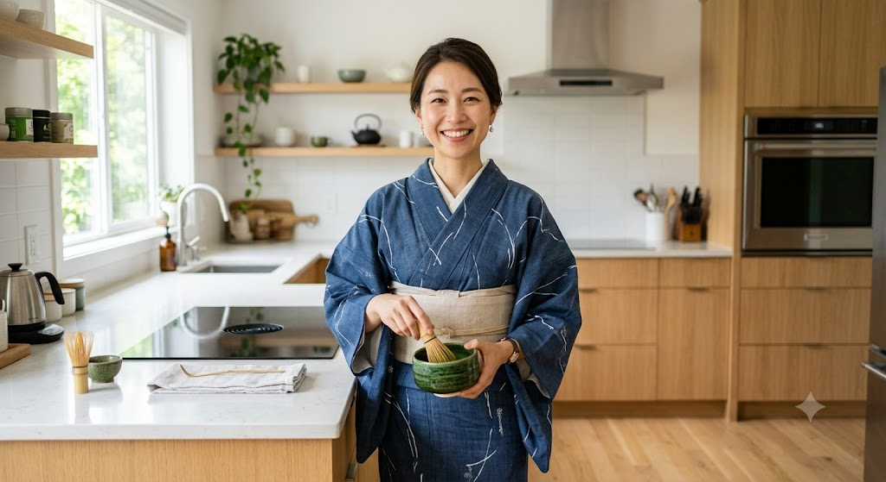
Chano-yu Master Riko
Certified Ceremony InstructorRiko-sensei hosts our monthly workshops, guiding members in the spiritual core of the Japanese tea ceremony.
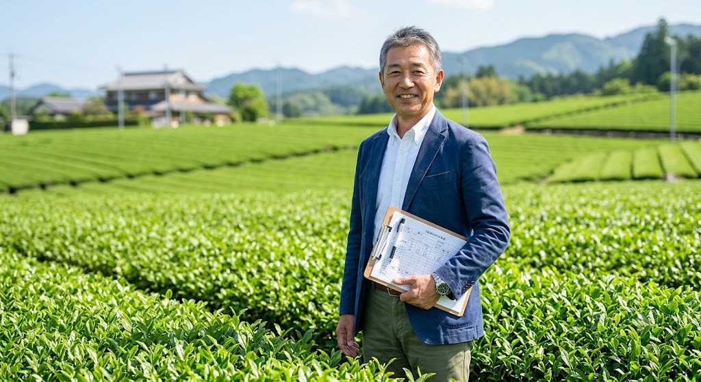
Dr. Satoshi Tanaka
Tea Chemical ResearcherSatoshi verifies the antioxidant concentration and ensures our organic certification conforms to strict USDA/JAS criteria.
Caring for the Earth
Our commitment goes beyond organic farming. Sado tins are fully recyclable, our refill pouches are 100% compostable, and 3% of our revenue supports traditional bamboo weaving communities in Takayama, Nara, preservation of the chasen-craft.